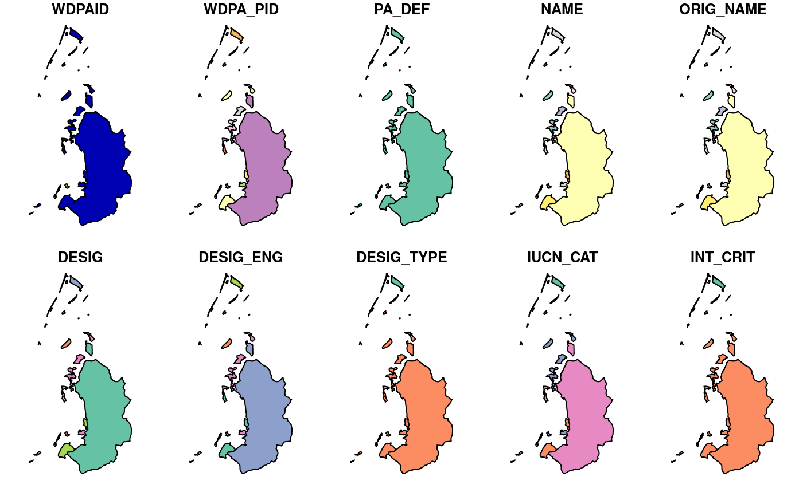

Read data obtained from Protected Planet. Specifically, this function is designed to import data obtained from the World Database on Protected Areas (WDPA) and the World Database on Other Effective Area-Based Conservation Measures (WDOECM).
wdpa_read(x, n = NULL)character file name for a zip archive file downloaded from
https://www.protectedplanet.net/en.
integer number of records to import per data source.
Defaults to NULL such that all data are imported.
sf::sf() object.
This function assumes that data have previously been downloaded to
your computer, and need to import the data.
After importing the data, it is strongly recommended to clean the data
prior to analysis (see wdpa_clean()).
The PA_DEF column indicates the data source for individual
areas and sites that comprise the imported dataset.
Specifically, data obtained through the World Database on Protected Areas
(WDPA) are indicated with a value of 1 in the PA_DEF column.
Additionally, data obtained through the World Database on Other Effective
Area-Based Conservation Measures (WDOECM) are indicated with a value of 0
in the PA_DEF column.
For more details on data conventions, please consult the official manual
(UNEP-WCMC 2019).
UNEP-WCMC (2019). User Manual for the World Database on Protected Areas and world database on other effective area-based conservation measures: 1.6. UNEP-WCMC: Cambridge, UK. Available at: https://wcmc.io/WDPA_Manual.
# \dontrun{
# find url for Liechtenstein dataset
download_url <- wdpa_url("LIE", wait = TRUE)
# path to save file zipfile with data
path <- tempfile(pattern = "WDPA_", fileext = ".zip")
# download zipfile
result <- httr::GET(download_url, httr::write_disk(path))
# load data
lie_raw_data <- wdpa_read(path)
# plot data
plot(lie_raw_data)
#> Warning: plotting the first 10 out of 30 attributes; use max.plot = 30 to plot all

# }